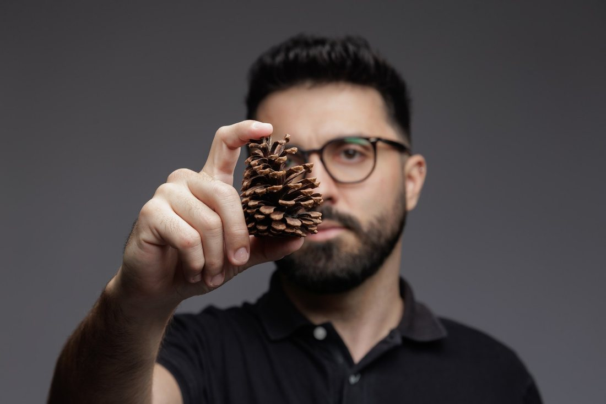
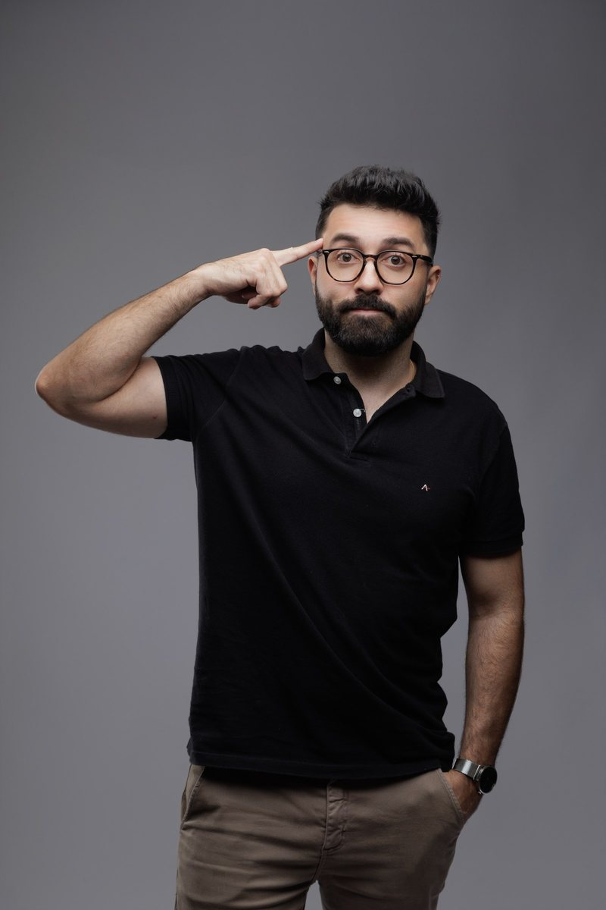

Não ensinamos você a acumular mais Biologia. Construímos a estrutura.
A estrutura que transforma conhecimento em raciocínio de prova. É esse o trabalho do professor Vitor Hugo dentro da BIO em CASA.
Quem está do outro lado da aula
Vitor Hugo dá aula de Biologia para quem está mirando Medicina — FAMEMA, FAMERP, UNIFESP, UNICAMP, FUVEST, Einstein, Santa Casa, FMJ, ENEM. São provas diferentes, com jeitos diferentes de cobrar a mesma matéria, e é isso que define como cada revisão é montada.
A BIO em CASA nasceu dessa ideia simples e teimosa: Biologia em qualquer lugar, com alguém que organiza o caminho em vez de despejar conteúdo. O aluno não chega aqui sabendo pouco. Chega sabendo muito, e solto. O trabalho é dar forma a isso.
O Método BC é a espinha dorsal desse trabalho. Ele está dentro de todas as aulas e revisões, e o professor apresenta como ele funciona para quem entra na turma.
- Nome
- Vitor Hugo
- Formação
- Ciências Biológicas — UNICAMP
- Experiência
- +10 anos no ensino de Biologia · Oficina do Estudante, Poliedro e Objetivo · Fundador do Bio em Casa · Ensino para alunos de Medicina desde 2019
- Foco
- Biologia para vestibulares de Medicina e ENEM
- Metodologia
- Método BC — apresentado ao aluno dentro do curso
- Formato
- Aulas e revisões on-line · Biologia em qualquer lugar
Biologia é coisa pra pegar na mão.



Quando a Biologia faz sentido, a prova muda.
As revisões de 2026 são o jeito mais direto de estudar com o professor: calendário fechado, aulão por aulão, na data certa de cada vestibular.
Ver o Calendário 2026